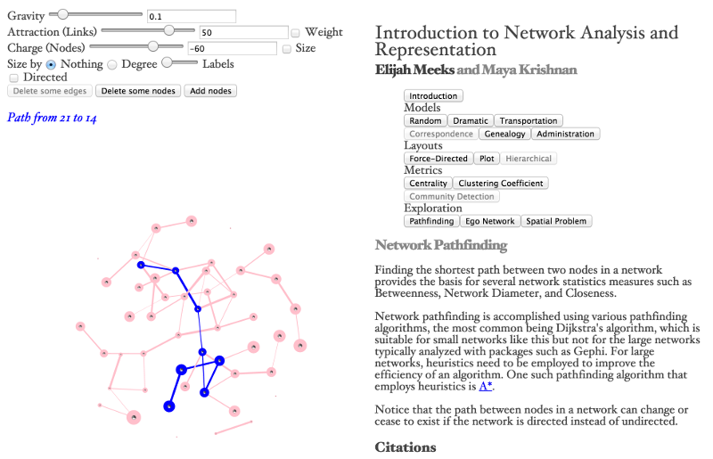

From the original site
This archived piece preserves its original text and historical context.
An Introduction to Network Analysis and Representation
As I grew more interested in network analysis, and more familiar especially with D3's force-directed layout, I found myself teaching workshops that I was woefully underqualified to teach. This tool was developed to help me better understand the fundamentals of network analysis and share those with putative workshop participants.

What went right
I think the spatial problem explanation (which I would later deal with in more detail in one of my Gestalt essays) was really important. I had to write my own pathfinding and breadth first search algorithms, which any first-year CS student would have experienced but for me, a philosophy major, was incredibly valuable for better understanding network analysis.
What went wrong
Just look at it. There are so many blank spots throughout it where documentation is supposed to go.
The next version would have
Probably some kind of live-coding capability.